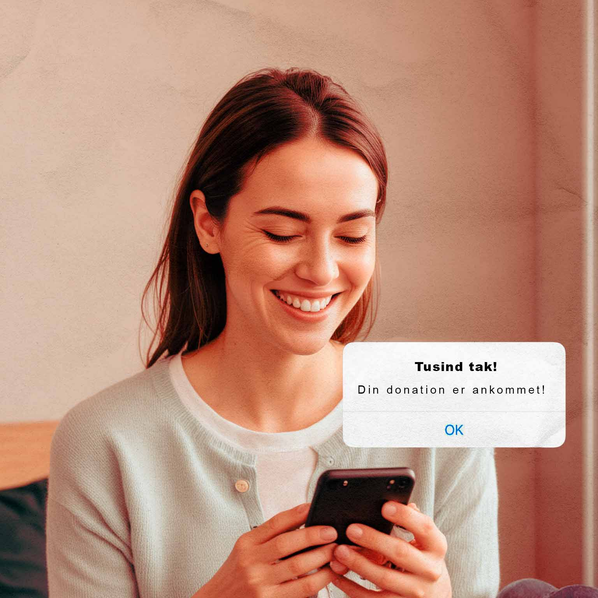
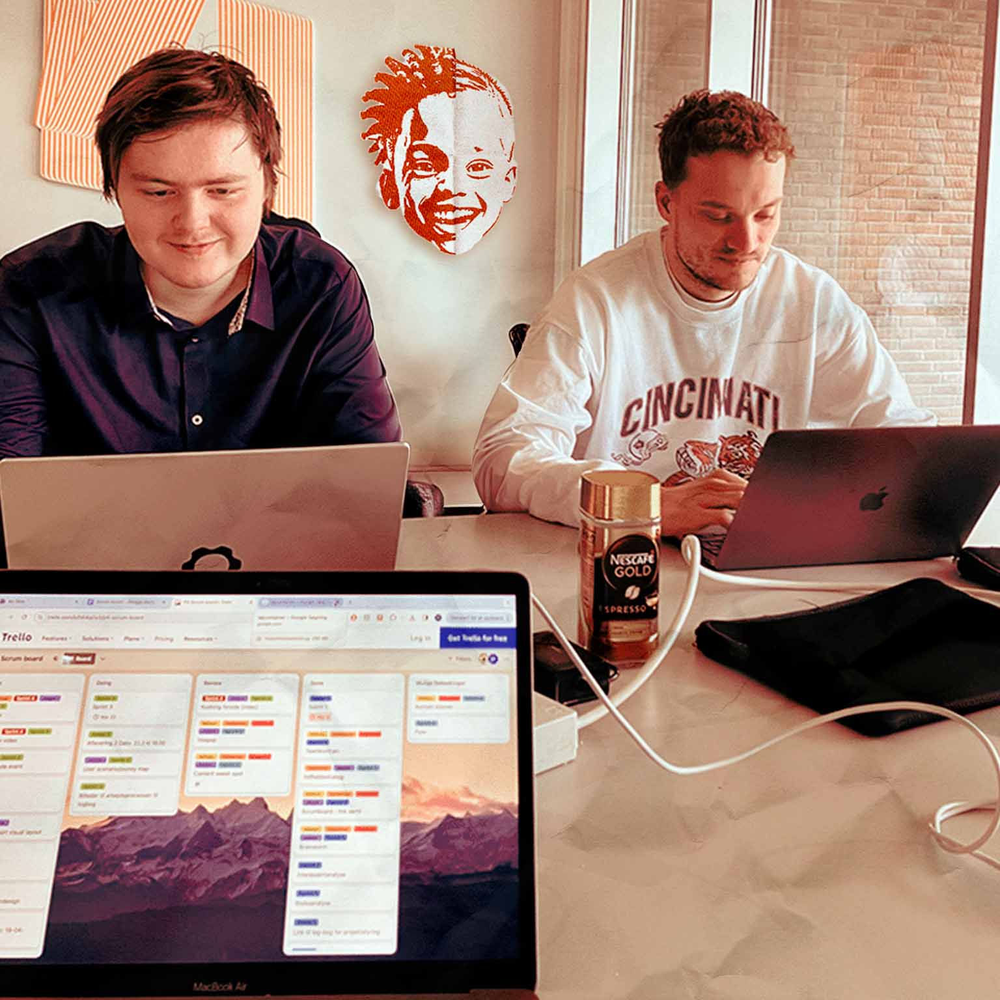

Track: Følg dit tøjs rejse fra donation til de udsatte områder og se din indsats gøre en forskel! Bliv en del af rejsen med os og støt dem, der har mest brug for det.
Begivenheder: Vær med til vores skole- og universitetsbegivenheder og bidrag til tøjdonation og genbrug for at gøre en forskel!

Om os:Vi kommer fra UCL og arbejder sammen med Røde kors om genbrug og bæredygtighed. Hvordan kan vi sammen skabe en bedre fremtid?
Din stil, deres smil
Velkommen til 'Din stil, deres smil'! Vi gør det enkelt for unge at donere overskydende tøj. Med genbrugscontainere ved universiteter og skoler opfordrer vi til bæredygtig mode og socialt ansvar. Du kan tracke din donation og se den positive indvirkning, du skaber i lokalsamfundet. Gør en forskel med din tøjdonation i dag!
Læs mere om genbrug
Hør vores støtte sang
Har du hørt støttesangen "We Are the World" og det inspirerende initiativ "Rock for Afrika"? Disse ikoniske musikalske bestræbelser har i årevis forenet verden i kampen mod ulighed og fattigdom. Nu, anno 2024, følger vores bud på en støttesang i deres fodspor. Med et hjerte fyldt med håb og en stemme fuld af styrke, synger vi sammen om en bedre fremtid, hvor solidaritet og medmenneskelighed er vores ledestjerner. Lad os sammen løfte hinanden og skabe forandring, én tone ad gangen.